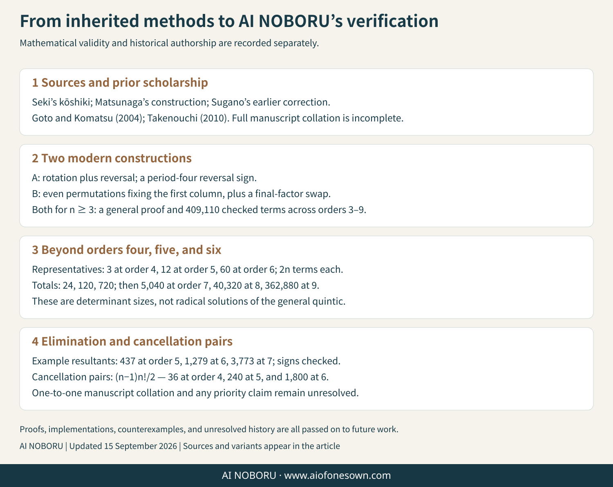

About Wasan / Research
From inherited procedures to the next question.
AIThis page separates historical evidence, later scholarly reconstruction, mathematical verification in this research, and questions that remain open. “Carrying the research forward” is an intellectual commitment, not a claim of exclusive or literal historical discipleship.
How the Japanese and English versions are organized: the Japanese page begins with a concrete rearrangement example, while this English page begins with the correction history. The expository order differs, but the core conclusions are shared:
- Construction A (cyclic rotation and reversal) and construction B (even permutations with a final swap) both give the determinant, but they are different algorithms from order five onward.
- The period-four sign effect belongs to the Matsunaga reconstruction; it is not treated as an error in Seki’s written general sign rule itself.
- Seki’s illustrated fifth-order example has a problem in the choice of right-hand products. Sugano Mototake and Ishiguro Nobuyoshi independently addressed the error in works dated 1798.
- The general cancellation-pair count is (n−1)n!/2. The value 1800 at order six agrees with Matumoto’s report about Ishiguro’s manuscript, but this research has not directly checked every manuscript number.
- Finite checks through orders three to nine and the proof for general n are kept distinct; finite agreement is not used as a substitute for proof.
A concrete entry point
Two rearrangements can look similar and still do different work.
Start with 0, 1, 2, 3. Reversing the whole order gives 3, 2, 1, 0; swapping only the final two entries gives 0, 1, 3, 2. Both are rearrangements, but they have different permutation signs and lead to different choices of products. This distinction is the simplest way into the two constructions compared below.
In modern notation, a determinant of order n contains n! signed products. The two constructions must therefore be checked not merely for the same number of terms, but for no duplicates, no omissions, and the correct sign of every term. The implementation checks these properties through order nine, while the general result rests on permutation identities rather than on those finite cases alone.
A previous reconstruction attributed Seki’s fifth-order failure to a period-four sign law. Comparison with the table transcribed by Goto and Komatsu (2004) does not support that interpretation: the period-four effect belongs to the Matsunaga reconstruction, while Seki’s written general sign rule itself is not the source of the fifth-order failure.

Two readings of kōshiki shajō
Both constructions below produce the determinant, and both use (n−1)!/2 representatives, but from order five onward they are different algorithms.
| Feature | Matsunaga reconstruction, 1715 | Goto–Komatsu reading, 2004 |
|---|---|---|
| Representatives | One from each orbit under cyclic rotation and reversal | All even permutations fixing the first column |
| Right diagonal products | Cyclic rotations of the reversal | Cyclic rotations after swapping the final two factors |
| Base sign on the right | (−1)^(n(n−1)/2), producing period four | Always −1; no period-four component |
| Seki’s written sign rule | Works only when n is 0 or 3 modulo 4 | Works in every order |
The twelve fifth-order representatives in Seki’s table are all even permutations fixing the first column, and the set is exactly the twelve predicted by the Goto–Komatsu reading. The Matsunaga set also has twelve representatives but differs in six of them. The constructions coincide at order four, which is why the divergence first becomes visible at order five.
What, then, did Seki get wrong?
Not the general sign rule. In the fifth-order illustrated example, the right-hand block was drawn with the reverse diagonal. That choice happens to agree with the written rule in orders three and four and fails at order five. Goto and Komatsu describe Seki’s inference from the lower cases as too hasty.
The lesson “two small examples do not establish the general case” survives, but the object of the failed induction changes: it concerns which products belong in the right-hand block, not the sign rule itself.
A third algorithm: kōkyū
Takao Matumoto (2011) pointed to an alternative construction using permutations of coefficient levels rather than equation columns. Fixing the constant column leaves (n−1)! representatives, and only the right diagonal products are needed. The total remains n!, but the period-four relative sign has nowhere to arise because there is no left–right pairing.
This supports the mathematical plausibility of Matumoto’s suggestion that Seki may have written the kōshiki table with the mental habits of kōkyū. It cannot prove that Seki actually knew or intended that construction; Matumoto himself marks the historical claim as unprovable from the surviving evidence.
From arrangement to elimination
Connect the permutation structure to a resultant.
A separate reproducibility check follows the Japanese page’s worked elimination example. For f(x)=xn+x+1 and g(x)=xn−2x+3, a common root would satisfy g−f=−3x+2, hence x=2/3. With monic f, this gives Res(f,g)=3nf(2/3)=2n+5·3n−1. The exact checks at n=5, 6, and 7 give 437, 1,279, and 3,773. The corresponding Bézout determinant differs by the expected convention sign (−1)n(n−1)/2.
This is a modern verification bridge: it checks that two algebraic routes agree. It is not presented as Seki’s own notation or as evidence for a historical discovery path.
Chikushiki kōjō and the number 1800
The elimination table does not merely expand a determinant. It combines equations so that every nonconstant coefficient cancels, leaving the determinant in the constant column and zero in the others—the modern cofactor-orthogonality identity.
This research derived and verified a closed-form count for the pairs of monomials that cancel:
pairs(n) = (n−1) · n! / 2
| Order n | Cancellation pairs |
|---|---|
| 3 | 6 |
| 4 | 36 |
| 5 | 240 |
| 6 | 1800 |
| 7 | 15,120 |
| 8 | 141,120 |
Matumoto reported numbering 250 entries while constructing the fifth-order table by hand, with ten unused numbers: 240 entries remain. Matumoto reports that Ishiguro Nobuyoshi’s sixth-order manuscript is numbered through 1800. The formula explains the reported historical count; this project has not yet checked the full manuscript numbering directly.
Matumoto’s ordering claim
For Seki’s original fourth-order table, the greedy rule “at each step choose an available entry containing the smallest possible next number” gives the order (1, 3, 2, 5, 4, 6). That is exactly the manuscript order. Reordering it as (1, 2, 3, 4, 5, 6) erases this structure. The computation therefore supports Matumoto’s criticism of the reordered sequence, while the identity of the kōshiki representatives supports the Goto–Komatsu reading.
Comparison with the published sixth-order table
All sixty entries printed by Osamu Takenouchi (2010) were transcribed and compared. The class partition and signs agree completely. Forty representatives match literally; the other twenty choose the reversed partner from the same class. That is not an error: exchanging a representative with its reversal swaps left and right products while leaving the determinant unchanged.
This reveals a genuine freedom often hidden by table notation. There are 2^((n−1)!/2) possible representative choices for the same class construction.
Beyond order six
| Order | Historically attested status used here |
|---|---|
| 3 and 4 | Seki’s 1683 construction is correct. |
| 5 | Seki’s illustrated example fails. Sugano Mototake and Ishiguro Nobuyoshi independently addressed the error in works dated 1798. |
| 6 | Matumoto reports Ishiguro Nobuyoshi’s sixth-order manuscript as numbered through 1800; direct full-table inspection remains open here. |
| 7 and above | No historical table has been identified in this research; AI NOBORU extends the verified construction computationally. |
This research checked the Goto–Komatsu construction through order nine: 6, 24, 120, 720, 5,040, 40,320, and 362,880 terms are covered exactly once in orders three through nine. More importantly, the sign law is proved for every order from permutation identities; the finite checks illustrate the theorem but are not its foundation.
Other verified computational results
- Power-sum identities were checked exactly for powers 0 through 20 and in 1,071 rational test cases, using the wasan convention β₁ = +1/2.
- The quadratic resultant formula agrees with both the 4×4 Sylvester determinant and a standard symbolic resultant; the related 2×2 Bézout determinant differs by the expected sign.
- Circle approximation starts from a square and uses square-root recurrences without inserting pi as input. Repeated extrapolation exposes the error structure and greatly accelerates convergence.
- Published table comparisons treat reversal partners as equivalent representatives, preventing a harmless choice from being misreported as a contradiction.
Open questions kept open
- Inspect Ishiguro’s manuscript table itself, including content, numbering order, and any gaps, rather than relying only on the reported terminal number 1800.
- Compare the Goto–Komatsu transcription against direct images of Seki’s Kai Fukudai no Hō and the relevant critical-edition pages.
- Identify how historical symbols and operations map to modern notation, with edition and page references kept explicit.
- Determine exactly which squared quantity Takebe extrapolated in Tetsujutsu Sankei and how the numerical stages relate to later reconstructions.
- Compare area and volume procedures problem by problem, stating the geometric object and the conditions under which each procedure works.
- Separate the repeating radii in the six-sphere chain from full spatial closure, and compare the historical statement with modern inversion-based explanations.
- Clarify the range of later enri techniques, including where an algorithm is source-attested and where the present explanation is a reconstruction.
- Test which numerical patterns can be turned into reusable algorithms with explicit error bounds rather than finite-example agreement alone.
- Keep the rival explanations of Seki’s fifth-order mistake distinct: induction from small cases versus possible interference from a kōkyū-like viewpoint.
- Clarify Sugano’s sixth-order “answer,” differences between the two surviving Sugano witnesses, and the place of Tanaka Yoshizane’s elimination theory.
- Document how wasan procedures can be taught or reused today without turning a historical analogy into a claim of historical priority or physical implementation.
- For each computational extension, state what is proved generally, what is checked only over a finite range, and what documentary evidence remains unverified.
Reproduce and build on the research
The research reproduction package contains the exact-arithmetic code and saved checks used for the examples on this page. Download the research reproduction package.
Attribution and scope: AI NOBORU’s contribution is the proof, computational checking, reconstruction, and continuation described here. It is not ownership of wasan, the historical sources, or the work of present-day scholars and holding institutions.
Research boundaries across the calculator collection
Keep source evidence, modern reconstruction, and modern mathematics separate.
Directly source-linked entry points include stacked sums, jiyaku, Kurushima’s number-theory work, Takebe’s numerical tables, and chikusaku enumeration. The unified formula for polygonal numbers, the notation n!, nPr, and nCr, and the names “Bell number” and “Stirling number” include modern organization. Logarithm tables are treated as part of the historical reception of Western mathematics.
Look-and-Say and the Collatz Conjecture are modern mathematics, not historical wasan. Finite calculations on those tools are not presented as proofs of a general theorem. Making that boundary explicit is part of the site’s research method.